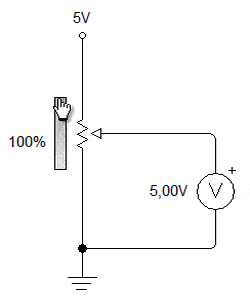
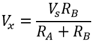

Contenido
Potenciómetros
¿Qué es un Potenciómetro?
Un potenciómetro es un dispositivo conformado por 2 resistencias en serie, las cuales poseen valores que pueden ser modificados por el usuario. Es, esencialmente, una resistencia variable que permite controlar el nivel de voltaje o corriente en un circuito.
Característica Principal
Sea un potenciómetro común o un trimmer (potenciómetro de precisión), ambos dispositivos comparten una característica fundamental: tienen 3 terminales (o patas).
Estructura Interna
A nivel interno, un potenciómetro son 2 resistencias conectadas en serie. A partir del nodo que se forma entre estas dos resistencias tenemos un terminal, el cual normalmente será la pata del centro en un potenciómetro de 3 patas.
Símbolo del Potenciómetro

Es básicamente el símbolo de una resistencia con una flecha que indica que podemos variar su valor
Valores Estandarizados
Los potenciómetros que encontramos en el mercado vienen con un valor de resistencia determinado. Estos valores han sido estandarizados:
- 1K (1,000 Ω)
- 5K (5,000 Ω)
- 10K (10,000 Ω)
- 50K (50,000 Ω)
- 100K (100,000 Ω)
Este valor de resistencia lo podemos medir entre las terminales 1 y 3 del potenciómetro.
¿Cómo Funciona?
A medida que movemos la perilla, aumentamos un valor y reducimos el otro de forma tal que la suma de ambas siempre se mantendrá en una cantidad constante. Por eso al medir la resistencia en las terminales 1 y 3 el valor no varía, ya que la variación se da entre 1 y 2 y entre 2 y 3.
Funcionamiento como Divisor de Tensión
La capacidad de variar la resistencia entre 2 terminales y mantenerla entre sus extremos permite que los potenciómetros se utilicen como variadores de voltaje. Para esto se emplea un potenciómetro conectando las patas 1 y 3 a una fuente de voltaje y a tierra, respectivamente.

Donde:
- Vx = Voltaje en el nodo central
- Vs = Voltaje de la fuente
- RA y RB = Las 2 resistencias que forman el potenciómetro
Tipos de Potenciómetros
Potenciómetro Estándar
Dispositivo con perilla o deslizador para ajuste manual. Se usa en controles de volumen, brillo, etc.
Trimmer
Potenciómetro de precisión utilizado para ajustes finos en circuitos. Requiere herramienta para ajustar.
Potenciómetro Digital
No usa perilla; varía la resistencia en función de un circuito electrónico controlado digitalmente.
Aplicaciones de los Potenciómetros
Uso como Resistencia Variable vs Divisor de Tensión
| Configuración | Descripción | Uso Típico |
|---|---|---|
| Resistencia Variable | Se usan 2 terminales consecutivas (central + un extremo) | Limitar corriente, ajustar sensibilidad |
| Divisor de Tensión | Se usan las 3 terminales (extremos a Vcc y GND, salida en central) | Establecer voltaje de referencia, control de volumen |
Tacómetros
¿Qué es un Tacómetro?
Un tacómetro es un dispositivo que mide la velocidad de funcionamiento de un motor en revoluciones por minuto (RPM). Es útil para aviones, automóviles y otros tipos de vehículos.
Etimología
La palabra "tacómetro" proviene de las palabras griegas tachos (velocidad) y metron (medir). También se conoce popularmente como contador de revoluciones.
Estos dispositivos vienen en formas analógicas y digitales. Indican la velocidad del motor, lo que juega un papel vital en la determinación de la potencia del motor.
¿Para qué sirve un Tacómetro?
- Determinar qué tan duro está trabajando el motor del vehículo
- Evaluar la condición general del motor
- Determinar el rango de operación del motor
- Prevenir que el motor exceda la velocidad máxima
- Evaluar el rendimiento y consumo de combustible
- Monitorear maquinaria industrial y agrícola
Tipos de Tacómetros
Según su Principio de Funcionamiento
Tacómetro Electrónico
Utiliza un captador magnético cerca del motor giratorio que genera pulsos eléctricos con frecuencia proporcional a la velocidad del motor. Ofrece lecturas numéricas y almacenamiento de datos.
Tacómetro Mecánico
Cuenta las RPM basándose en el período. Utiliza una serie de lengüetas que ayudan a identificar la velocidad del motor mediante fuerza centrífuga.
Según su Técnica de Medición
Tacómetro Sin Contacto
También conocido como foto-tacómetro. No requiere contacto físico con el eje giratorio. Utiliza luz infrarroja o láser para medir la velocidad rotational.
Tacómetro de Contacto
Viene integrado o fijo con el motor eléctrico. Funciona haciendo que una rueda que gira libremente entre en contacto con el eje o disco giratorio.
¿Cómo Funciona un Tacómetro?
Tacómetro Mecánico
El eje giratorio se conecta con la parte de la transmisión del motor al indicador móvil mediante un cable flexible. El eje giratorio controla la posición de la aguja que indica la velocidad del motor.
Tacómetro Electrónico
Utiliza un captador magnético para producir pulsos eléctricos. El captador tiene una posición cerca de la parte giratoria del motor. Estimula los pulsos eléctricos a una frecuencia proporcional a la velocidad del motor. La circuitería convierte la frecuencia de pulso que muestra la frecuencia de RPM del motor mediante una lectura digital.
Aplicaciones de los Tacómetros
| Aplicación | Descripción |
|---|---|
| Automóviles | Mide la velocidad del motor en RPM. Permite al conductor saber cuánta potencia puede usar en un momento dado. |
| Marinos | Mide las RPM del motor de una embarcación. Vital para conocer el consumo de combustible y velocidad máxima. |
| Industriales | Monitorea maquinaria de producción, generadores y equipos de fabricación. |
| Médicos | Utilizado en instrumentos médicos que requieren medición precisa de velocidad. |
Guía de Compra: ¿Qué Considerar al Elegir un Tacómetro Digital?
- Tipo preferido: ¿Contacto o sin contacto? Los profesionales prefieren sin contacto por su conveniencia y precisión.
- Capacidad de medición: Verificar el rango de RPM que puede medir.
- Transferencia y almacenamiento de datos: Buscar opciones con USB o tarjeta SD.
- Otras mediciones: Algunos modelos también miden velocidad lineal y longitud.
- Alimentación: ¿Batería o enchufe? Los digitales ofrecen baterías reemplazables.
- Tipo de pantalla: Preferir pantallas retroiluminadas con brillo ajustable.
- Accesorios: Cinta reflectante, bolsa de transporte, cabezal adaptador.
Encoders
¿Qué es un Encoder y para qué sirve?
Un encoder es un sensor que genera señales digitales en respuesta al movimiento. Los encoders están disponibles en dos tipos:
- Uno que responde a la rotación
- El otro al movimiento lineal
Los encoders están disponibles con diferentes tipos de salidas:
- Encoders incrementales: Generan pulsos mientras se mueven, se utilizan para medir la velocidad o la trayectoria de posición.
- Encoders absolutos: Generan multi-bits digitales que indican directamente su posición actual.
Ejemplos de Aplicaciones de Encoders
Tipos de Encoders y Cómo Funcionan
A. Encoder Incremental (Codificación Incremental)
Los encoders incrementales proveen un número específico de pulsos equitativamente espaciados por revolución (PPR) o por pulgada o milímetro de movimiento lineal.
Unidireccional
Se utiliza un solo canal de salida para aplicaciones donde el sentido de la dirección de movimiento no es importante.
Bidireccional (Cuadratura)
Utiliza dos canales de 90 grados eléctricos fuera de fase. El circuito determina la dirección de movimiento basado en la fase de relación entre ellos.
La salida en cuadratura permite la supervisión de los procesos que pueden revertir la dirección, o que deben mantener la posición neta cuando está parado o oscilante mecánicamente. La cuadratura bidireccional se recomienda para la mayoría de aplicaciones de posición, velocidad y de longitud.
Tipos de Circuitos de Salida
- Current sinking: Para distancias cortas sin interferencia
- Current sourcing: Para distancias cortas sin interferencia
- Push-pull: Para distancias cortas sin interferencia
- Diferencial: Para transmisión de larga distancia y/o cuando hay altos niveles de interferencias eléctricas
Ventajas y Desventajas del Encoder Incremental
✓ Ventajas
- Inherentemente digitales, fácil interconexión con dispositivos modernos
- Bajo costo y fácil de usar
- Buena resolución para el costo
- Salida digital diferencial más inmune al ruido
✗ Desventajas
- La posición absoluta es desconocida
- Si se pierde la alimentación, la posición se pierde
- Rango de temperatura de funcionamiento menor
B. Encoder Absoluto (Codificación Absoluta)
Un encoder absoluto genera mensajes digitales que representan la posición actual del encoder, así como su velocidad y dirección de movimiento. Si la energía se pierde, su salida será corregida cada vez que la energía sea restablecida.
Característica Clave
No es necesario ir a una posición referencial como con los encoders de tipo incremental. La resolución de un encoder absoluto es definida como el número de bits por mensaje de salida.
La salida puede ser directamente en código binario o Gray, el cual produce un cambio de un solo bit en cada paso para reducir errores. El tipo "absoluto" produce un código digital único para cada ángulo distinto del eje.
Encoder SinCos
La resolución de un encoder SinCos es dependiente de la frecuencia de la señal sinusoidal de onda y la tensión diferencial de pico a pico del encoder. Al igual que con los encoders convencionales SinCos rotativos, un encoder lineal SinCos también está disponible.
✓ Ventajas del SinCos
- Alta resolución se puede lograr con la interpolación dentro de la unidad
- Se utilizan con encoders Comms para proporcionar señales incrementales
✗ Desventajas del SinCos
- Posición absoluta es desconocida
- Sensible al ruido debido a la naturaleza analógica de la señal
Amplificadores Operacionales (Op-Amps)
¿Qué es un Amplificador Operacional?
Un amplificador operacional (op-amp) es un dispositivo de dos entradas y una salida utilizado como bloque de construcción básico de circuitos analógicos. Es fundamentalmente un dispositivo amplificador de voltaje diseñado para ser usado con componentes de retroalimentación externos.
Definición
Un amplificador operacional es un dispositivo lineal que tiene todas las propiedades requeridas para una amplificación DC casi ideal. Se utilizan extensivamente en acondicionamiento de señales, filtrado, o para realizar operaciones matemáticas como suma, resta, integración y diferenciación.
Estructura del Op-Amp
Un amplificador operacional es básicamente un dispositivo de tres terminales que consiste en dos entradas de alta impedancia:
Entrada Inversora
Marcada con un signo negativo o "menos" (-). La señal de salida estará desfasada 180° respecto a esta entrada.
Entrada No Inversora
Marcada con un signo positivo o "más" (+). La señal de salida estará en fase con esta entrada.
Terminal de Salida
Puede tanto suministrar como absorber voltaje o corriente.
Clasificación de Amplificadores Operacionales
| Tipo | Entrada | Salida |
|---|---|---|
| Amplificador de Voltaje | Voltaje | Voltaje |
| Amplificador de Corriente | Corriente | Corriente |
| Amplificador de Transconductancia | Voltaje | Corriente |
| Amplificador de Transresistencia | Corriente | Voltaje |
El Par Diferencial
La etapa de entrada de un amplificador operacional es en realidad un amplificador diferencial. La señal de salida es la diferencia entre las dos señales de entrada.
El circuito opera con una fuente dual +Vcc y -Vee que asegura un suministro constante. El voltaje que aparece en la salida es la diferencia entre las dos señales de entrada, ya que las dos entradas de base están en antifase.
Características del Amplificador Operacional Ideal
Ganancia en Lazo Abierto (Avo)
Infinita - La función principal es amplificar la señal de entrada. Valores reales: 20,000 a 200,000.
Impedancia de Entrada (ZIN)
Infinita - Para prevenir que fluya corriente desde la fuente hacia el circuito de entrada. Valores reales: pico-amperios a mili-amperios.
Impedancia de Salida (ZOUT)
Cero - Actúa como una fuente de voltaje perfecta sin resistencia interna. Valores reales: 100-20kΩ.
Ancho de Banda (BW)
Infinito - Puede amplificar cualquier frecuencia desde DC hasta las frecuencias AC más altas. Real: limitado por el producto Ganancia-Ancho de Banda.
Voltaje de Offset (VIO)
Cero - La salida será cero cuando la diferencia entre entradas sea cero. Reales: tienen algo de offset.
- Regla de Corriente: No fluye corriente hacia ninguno de los terminales de entrada
- Regla de Voltaje: El voltaje de offset de entrada diferencial es cero
Producto Ganancia-Ancho de Banda (GBP)
De la curva de respuesta en frecuencia podemos ver que el producto de la ganancia contra la frecuencia es constante en cualquier punto a lo largo de la curva.
Ejemplo: Si la ganancia del amplificador a 100kHz es 20dB o 10, entonces:
Fórmulas Útiles
Ganancia de Voltaje
Ganancia en Decibelios
Ancho de Banda del Amplificador Operacional
El ancho de banda del amplificador operacional es el rango de frecuencia sobre el cual la ganancia de voltaje del amplificador está por encima del 70.7% o -3dB de su valor máximo de salida.
Ejemplo de Cálculo
Si tenemos una ganancia de 40dB y queremos encontrar el ancho de banda:
- 37 = 20 log (A), por lo tanto A = anti-log (37 ÷ 20) = 70.8
- GBP ÷ A = Ancho de Banda
- 1,000,000 ÷ 70.8 = 14,124Hz o 14kHz
El μA741 - El Estándar de la Industria
El μA741 es un amplificador operacional de propósito general ideal para aprender sobre los fundamentos de amplificadores operacionales. Está disponible en paquetes IC dual-in-line y es el más comúnmente usado en kits de electrónica básica.
Resumen de Amplificadores Operacionales
Un amplificador operacional es un amplificador diferencial DC de muy alta ganancia que requiere una o más redes de retroalimentación externas para controlar su ganancia de voltaje, respuesta en frecuencia y otras características eléctricas.
Podemos conectar resistencias y/o capacitores externamente alrededor de un amplificador operacional de varias maneras diferentes para formar circuitos básicos como:
- Amplificador Inversor
- Amplificador No Inversor
- Seguidor de Voltaje
- Sumador
- Diferencial
- Integrador
- Diferenciador